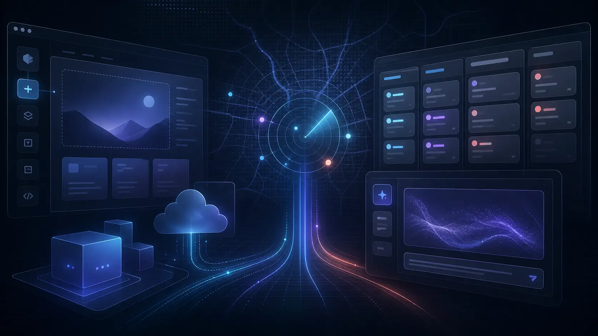
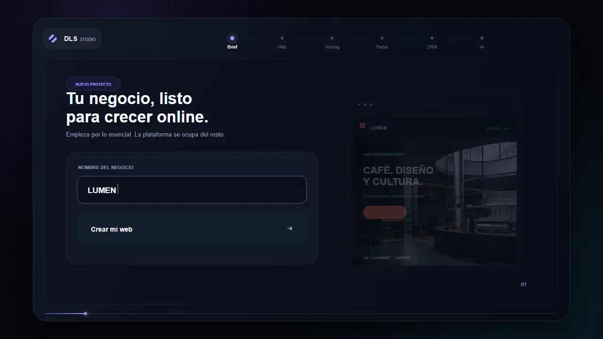
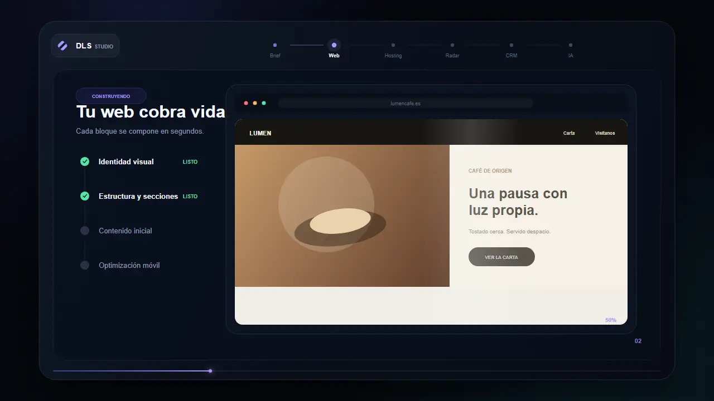
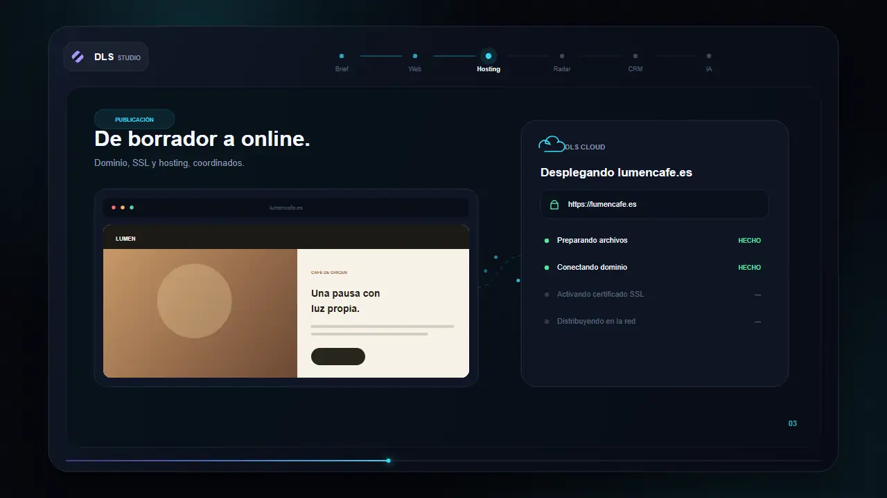
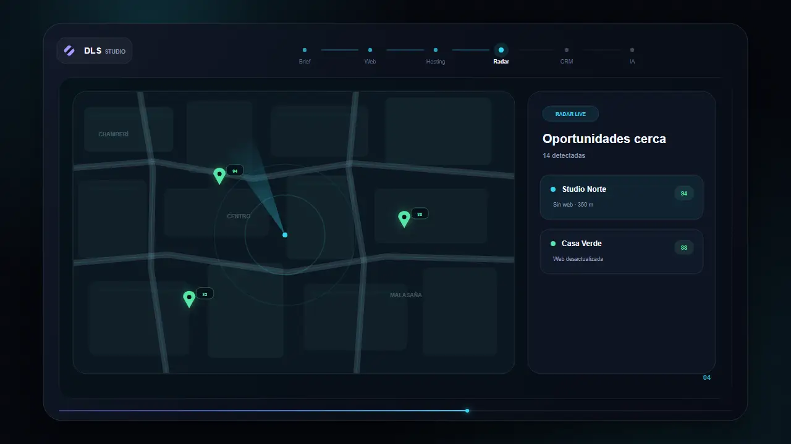
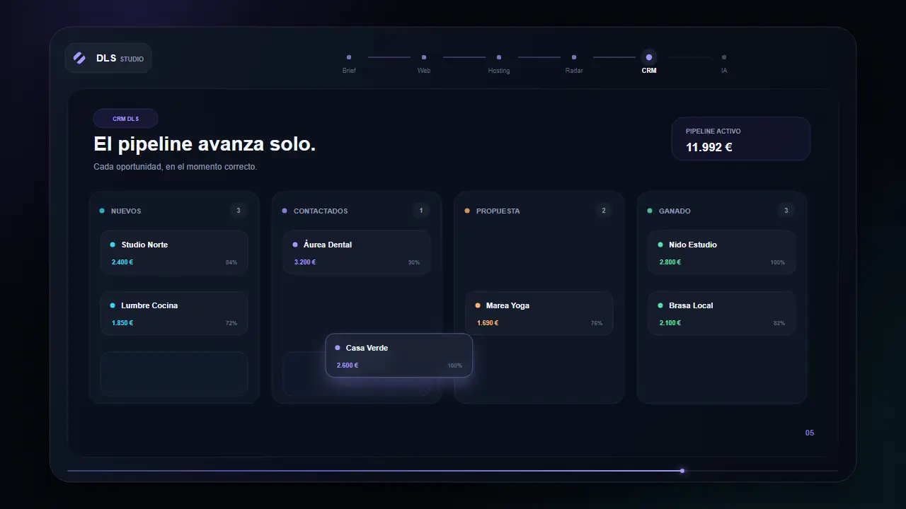
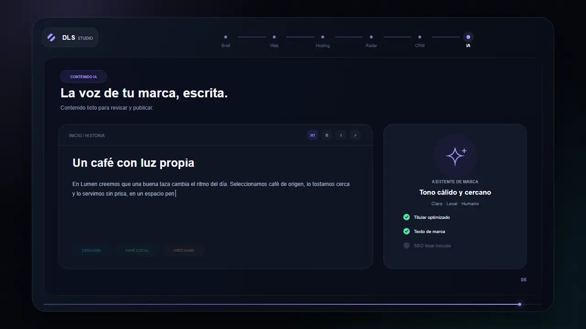

Empieza con el negocio, no con una plantilla.
Nombre, sector y objetivos se convierten en una dirección digital concreta.
El sistema operativo digital para negocios locales
De la primera idea al primer cliente: web premium, hosting, captación y CRM trabajando como un solo sistema.
Diseñado para operar, no solo para impresionar. Todo queda conectado desde el primer día.
Una plataforma. Todo el recorrido.
Sigue el flujo completo: DLS construye, publica, encuentra oportunidades y ordena cada relación comercial.

Nombre, sector y objetivos se convierten en una dirección digital concreta.
Estructura, diseño y contenido nacen juntos, listos para revisar.
Dominio, SSL, rendimiento y despliegue quedan dentro del mismo flujo.
OpenStreetMap y Google Places ayudan a detectar, ordenar y priorizar negocios.
Leads, ofertas, tareas y pipeline comparten una única fuente de verdad.
Mensajes y contenido se preparan con la voz correcta y revisión humana.

01Un brief útil se convierte en dirección de producto.

02Diseño, contenido y conversión nacen conectados.

03La parte técnica deja de frenar la entrega.

04El radar organiza señales reales del mercado local.

05CRM y automatización mantienen el trabajo en movimiento.

06La IA prepara contenido con contexto y revisión humana.
Capacidades conectadas
Cada módulo resuelve una parte concreta y comparte contexto con el resto. Menos herramientas, más continuidad.
Cómo funciona
Cuatro momentos, una misma relación de trabajo. Sin saltos entre estrategia, producción y operación.
Objetivos, propuesta, clientes y contexto local.
Web, mensajes, captación y operación alineados.
Revisión, entrega, hosting y accesos listos.
El CRM convierte actividad en próximas acciones.
Una base preparada para escalar
Cifras provisionales para validar la jerarquía visual. Se sustituirán por métricas verificadas antes de publicar.
webs preparadas para lanzar
TODO: dato realde puesta en marcha media
TODO: dato realinfraestructura supervisada
TODO: dato realfuente de verdad operativa
TODO: dato realTu siguiente espacio está listo
Producción para el equipo DLS. Operación y resultados para cada cliente.